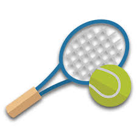
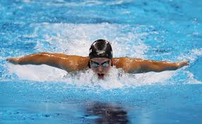

My Favorite Sports
Tennis

I played tennis ever since I was eight years old. I have a ranking of sub 100 in the district and sub 400 in the tristate area. I often train with my dad or my coach and like to play tournaments frequently. I was also on the South Brunswick High School school team and played as first doubles as well as first singles in JV.
Swimming

Although I don't swim as much as I play tennis, I still consider it to be one of my favorite sports. I often use it as training to improve my tennis game. When I was 9 years old, I got 2md place in the 100m freestyle at the Rutgers Junior Swimming Tournament. However, now that I've decided to turn swimming into a hobby, instead of doing it competetively, I only practice with my friends for fun.